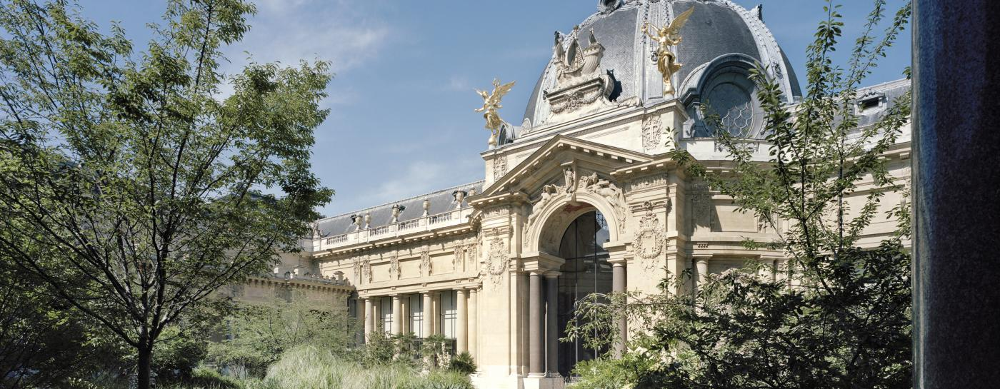
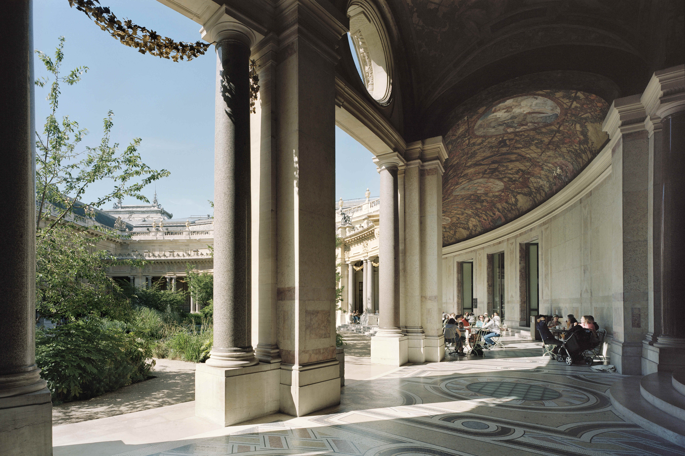
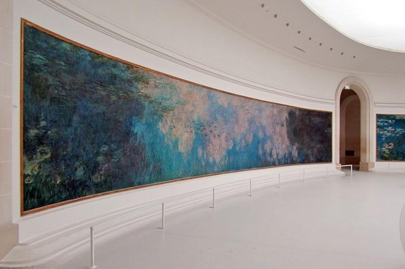

Musee de Montmarte is een ietwat verstopt museumpje in de wijk (je raadt het al) Montmartre. Deze sfeervolle kunstenaarsbuurt heeft al enorm veel te bieden, zoals prachtig uitzicht, de Sacre Couer en allemaal leuke straatjes en restaurantjes. Ondanks dat alles is dit museum echt een aanrader. Vele bekende schilders hebben gewoond en gewerkt aan hun kunst in dit prachtige pand. Namen zoals Renoir, Dufy en Valadon. De permanente collectie is al prachtig op zichzelf maar de wisselende collecties zijn vaak ook erg leuk om te bekijken. Naast een her geconstureerd atellier van de eerdere bewoners heeft dit museum ook prachtige tuinen met een enorm mooi uitzicht over Parijs. Het kleine cafeetje dat erbij zit geeft je de kans om echt even te ontsnappen aan de enigszins drukke wijk erbuiten.
 Het Petit Palais is niet alleen een museum met bijzondere tentoonstellingen. Het is een prachtig gebouw uit 1900, gebouwd voor de wereldtentoonstelling door architect Charles Girault, waarin je je compleet kan verwonderen. Het heeft een restaurantje in de binnentuinen waar je je heerlijk kan terugtrekken uit het drukke stadsleven van Parijs. Het voelt net alsof je ergens anders bent. Dus mocht je de tijd hebben dan is dit zeker de moeite waard om te bezoeken.
De orangerie is een prachtig museum in Parijs. Het stelt verschillende kunststromingen ten toon. Van dans, tot moderne kunst, maar het pronkstuk blijft toch de Waterlelies van Monet. Dit prachtige mega grote schilderij is zeker de moeite waard om te bezoeken. Achteraf kan je lekker koffie drinken in de tuinen van de orangerie.